In the Unity Editor import the FMOD for Unity 2.02.17 (Unity Verified) integration package by navigating to the Menu Bar > Assets > Import Package > Custom Package…
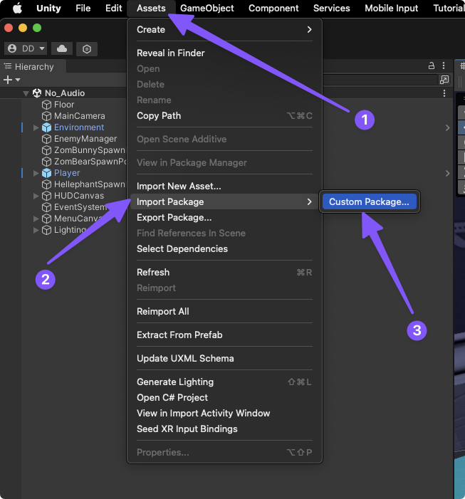
Select the FMOD Unity Package.unitypackage file and click “Open.”
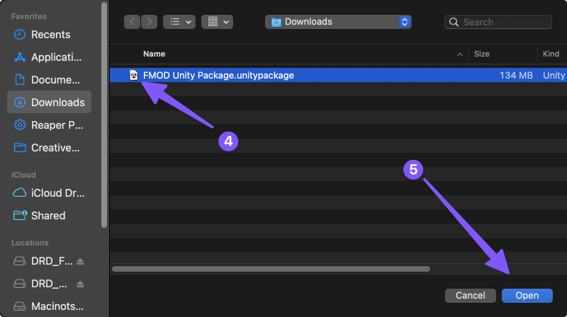
Click “Import”.
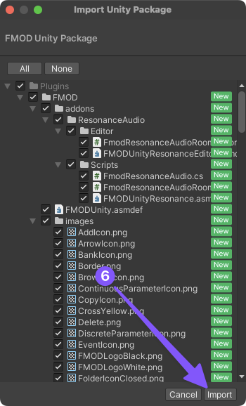
Follow the FMOD Setup Wizard
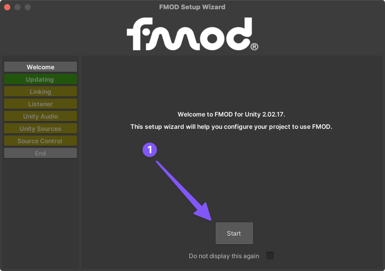
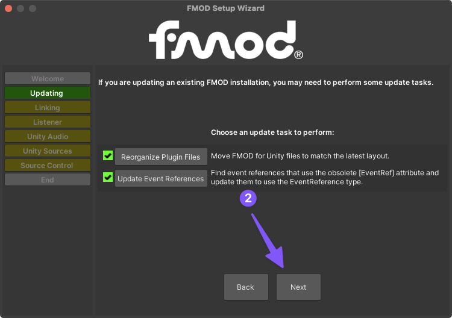
Choose how to open your FMOD project and select the FMOD Project you just created.
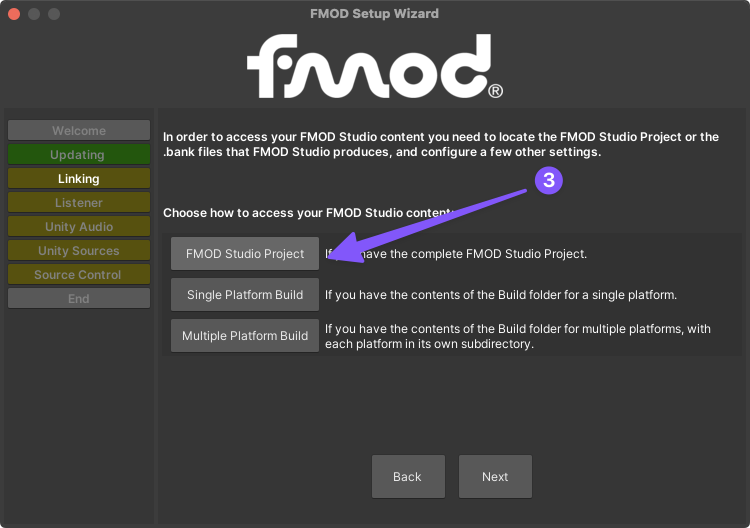
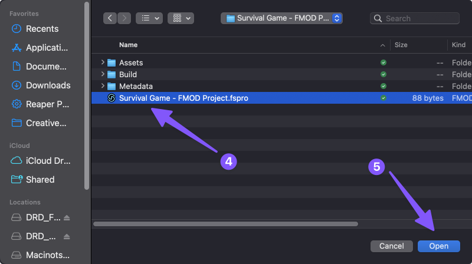
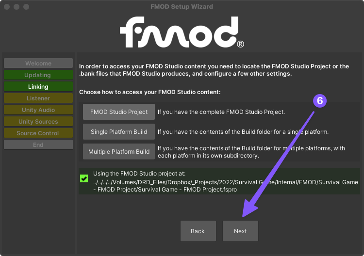
Since this project doesn’t have any existing Unity Audio components, you can just click next. If your game did have any existing Unity audio in it, this step of the FMOD Setup Wizard would help you replace any Unity Audio Components with FMOD audio components.
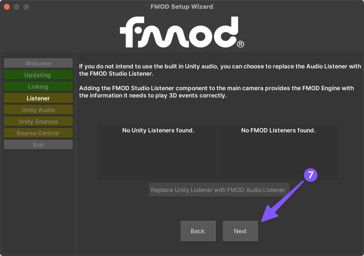
To be certain that our game is only using the FMOD audio engine, click to disable Unity’s built in audio, then click next.
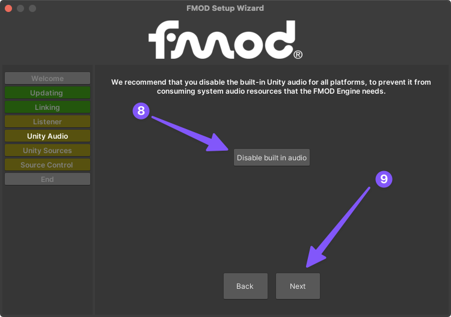
There shouldn’t be any Unity Audio Sources, so you can just click next.
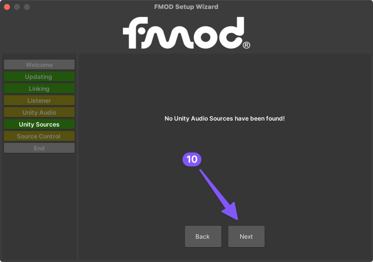
And since we are not using Source Control on this project, we can again click “Next”.
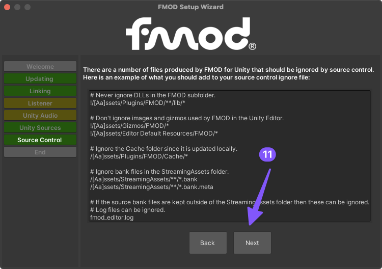
Before closing the FMOD Setup Wizard, click to open the FMOD Settings, then you can close the setup wizard.
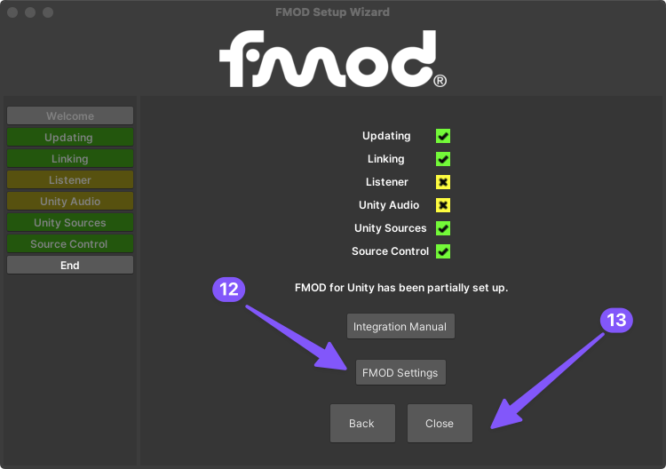
Take a moment to look over the FMOD Settings window that should have opened in your Unity Editor’s Inspector window on the right side. Most importantly notice this is where you can see what FMOD Project is associated with this Unity Project.
Then switch to the events panel and create the following folders and events.
Note
2D = in your head
3D = in the world
Then Action vs Timeline
Action = one-shot audio/music event
Timeline = more complicated than that

3. Then add all the audio assets to their corresponding events.

4. In order to make the music loop, right click on the Background Music Instrument then select New Loop Region.

5. You should now see a blue loop region at the top of your Background_Music event.

6. The last thing we need to do is add all our FMOD events to the Master bank. To do this, select all the events in the Events panel, right click on one of them, then navigate to Assign to Bank > Browse, and select the bank.

7. Finally, all we have to do is select “Build” from the File menu bar list and save our FMOD project.

Note
Background Music
We’ll come back to FMOD shortly to setup things like our mix, but this is enough for us to start hearing these sounds in our game.
First, we’ll need to be able to hear our FMOD events. Add an FMOD Studio Listener component to the MainCamera game object.
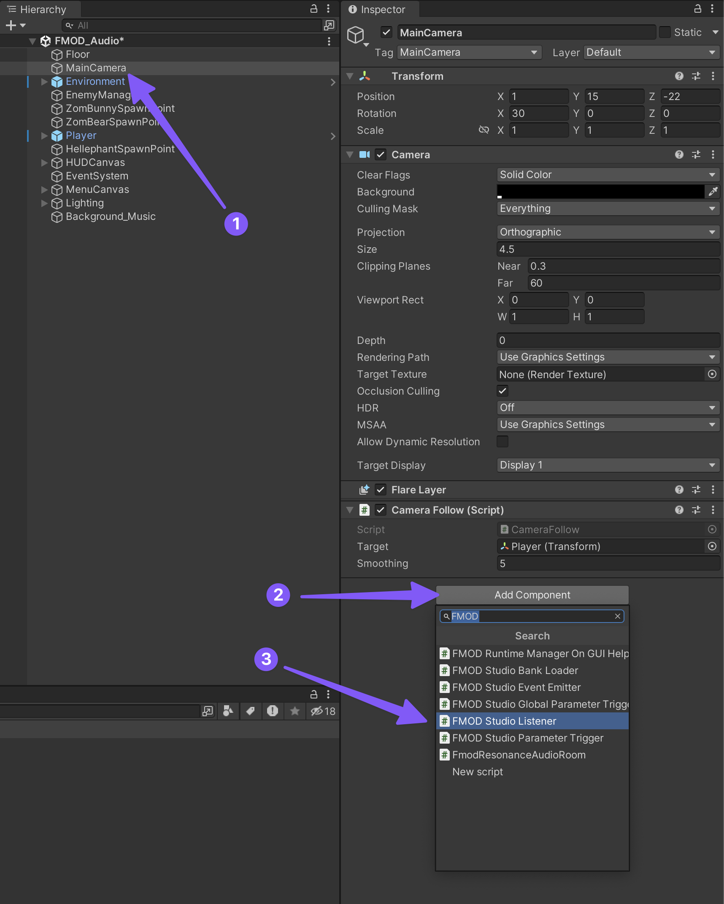
Next, let’s start with the easy part and get our background music going. Start by creating a new empty game object named “Background_Music” and adding an “FMOD Studio Event Emitter” component to it.
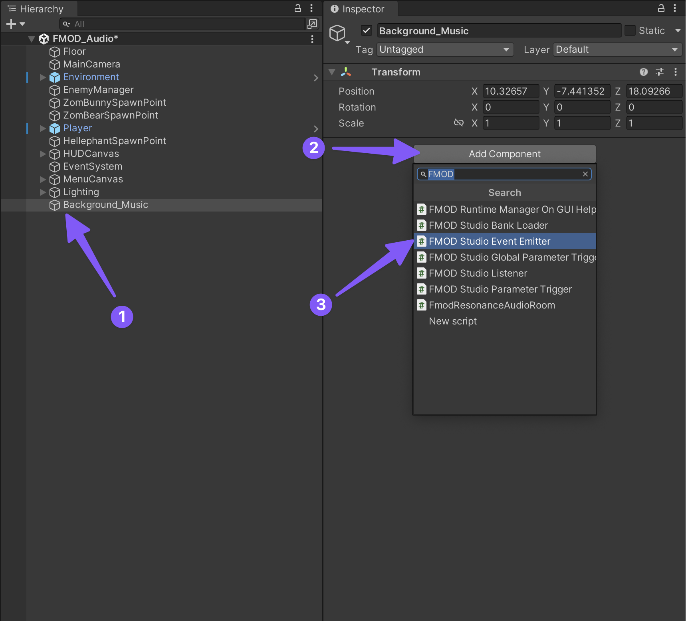
Then configure the new component so that the events plays when its associated game object spawns into existence, stops when it is destroyed, and select the Background_Music as its FMOD event.
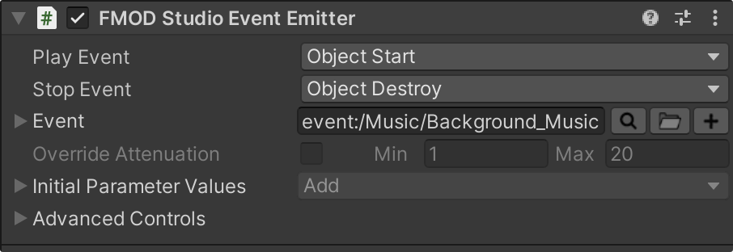
Note
Triggering FMOD Events within C# Scripts
Most of the time it wont be as simple as our background music was and either we or the game’s developer will need to consider how best to trigger our FMOD audio events by editing the existing C# scripts or writing new ones. In this case, we should be able to accomplish everything by editing a few of the existing scripts.
Note
First we’ll tell the script to use the FMODUnity capabilities by adding the following code at the top of the script, below any other using prompts.
using FMODUnity;
Next, we’ll add a public variable that will allows us to select an FMOD event from Unity’s inspector window for each of the sounds that we’ll need to be able to trigger from within our script. Each variable will look something similar to the code below but each time we’ll replace fmodEvent with something more meaningful, like playerHurt_fmodEvent, to make our script easier to work with and more readable.
public EventReference fmodEvent;
Finally, we’ll add a custom function (usually towards the bottom of the script) that will make it easier to play any FMOD events that we need with out needing to rewrite the same lines of code over and over.
public void PlayFmodEvent(EventReference fmodEvent){ RuntimeManager.PlayOneShot(fmodEvent);}
Now that we know what we will likely need to do to our existing scripts to connect our FMOD events, let’s start with adding our Player’s FMOD events.
In Unity, open the “Player Health (Script)” found on the Player game object.
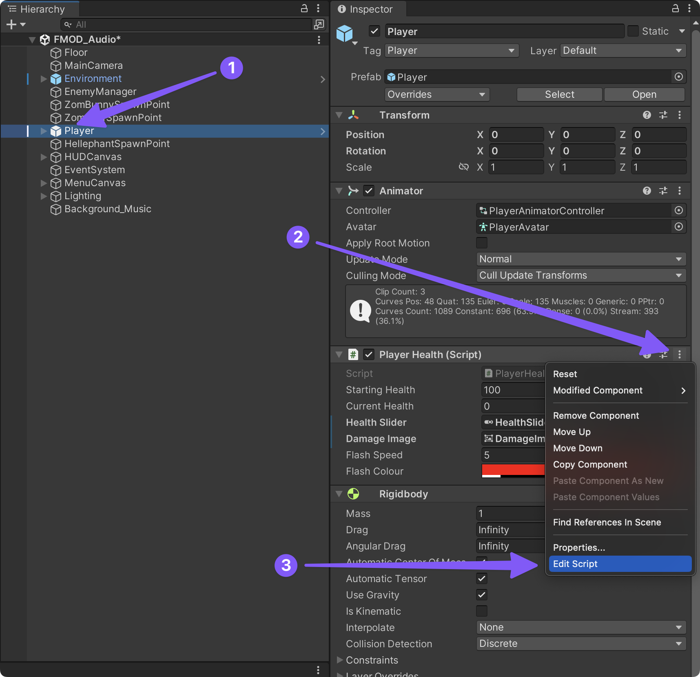
Then add using FMODUnity; below the other exiting using statements.
using UnityEngine;using UnityEngine.UI;using System.Collections;using UnityEngine.SceneManagement;using FMODUnity;
Then, towards the bottom of the script after the public void RestartLevel () function, add our custom PlayFmodEvent function.
public void PlayFmodEvent(EventReference fmodEvent){ RuntimeManager.PlayOneShot(fmodEvent);}
Finally, back, near the top of the script, just under the other public variables, add two public FMOD event variables for the two FMOD events related to the player’s health: hurt and death.
public EventReference playerHurt_fmodEvent;public EventReference playerDeath_fmodEvent;
Now we just need to tell the script to play each event at the appropriate moment. Add an empty line above the closing } of the public void TakeDamage (int amount) function, and add the following lines of code:
// Play the FMOD event for when the player get's hurtPlayFmodEvent(playerHurt_fmodEvent);
Similarly for the death FMOD event, let’s add an empty line at the bottom of the void Death () function and add the following code:
// Play the FMOD event for when the player diesPlayFmodEvent(playerDeath_fmodEvent);
Note
Here is what the finished PlayerHealth script should look like now:
- **Finished PlayerHealth script**
```csharp
using UnityEngine;
using UnityEngine.UI;
using System.Collections;
using UnityEngine.SceneManagement;
using FMODUnity;
namespace CompleteProject
{
public class PlayerHealth : MonoBehaviour
{
public int startingHealth = 100; // The amount of health the player starts the game with.
public int currentHealth; // The current health the player has.
public Slider healthSlider; // Reference to the UI's health bar.
public Image damageImage; // Reference to an image to flash on the screen on being hurt.
public float flashSpeed = 5f; // The speed the damageImage will fade at.
public Color flashColour = new Color(1f, 0f, 0f, 0.1f); // The colour the damageImage is set to, to flash.
public EventReference playerHurt_fmodEvent;
public EventReference playerDeath_fmodEvent;
Animator anim; // Reference to the Animator component.
PlayerMovement playerMovement; // Reference to the player's movement.
PlayerShooting playerShooting; // Reference to the PlayerShooting script.
bool isDead; // Whether the player is dead.
bool damaged; // True when the player gets damaged.
void Awake ()
{
// Setting up the references.
anim = GetComponent <Animator> ();
playerMovement = GetComponent <PlayerMovement> ();
playerShooting = GetComponentInChildren <PlayerShooting> ();
// Set the initial health of the player.
currentHealth = startingHealth;
}
void Update ()
{
// If the player has just been damaged...
if(damaged)
{
// ... set the colour of the damageImage to the flash colour.
damageImage.color = flashColour;
}
// Otherwise...
else
{
// ... transition the colour back to clear.
damageImage.color = Color.Lerp (damageImage.color, Color.clear, flashSpeed * Time.deltaTime);
}
// Reset the damaged flag.
damaged = false;
}
public void TakeDamage (int amount)
{
// Set the damaged flag so the screen will flash.
damaged = true;
// Reduce the current health by the damage amount.
currentHealth -= amount;
// Set the health bar's value to the current health.
healthSlider.value = currentHealth;
// If the player has lost all it's health and the death flag hasn't been set yet...
if(currentHealth <= 0 && !isDead)
{
// ... it should die.
Death ();
}
// Play the FMOD event for when the player get's hurt
PlayFmodEvent(playerHurt_fmodEvent);
}
void Death ()
{
// Set the death flag so this function won't be called again.
isDead = true;
// Turn off any remaining shooting effects.
playerShooting.DisableEffects ();
// Tell the animator that the player is dead.
anim.SetTrigger ("Die");
// Turn off the movement and shooting scripts.
playerMovement.enabled = false;
playerShooting.enabled = false;
// Play the FMOD event for when the player dies
PlayFmodEvent(playerDeath_fmodEvent);
}
public void RestartLevel ()
{
// Reload the level that is currently loaded.
SceneManager.LoadScene (0);
}
// our custom function for playing FMOD events.
public void PlayFmodEvent(EventReference fmodEvent)
{
RuntimeManager.PlayOneShot(fmodEvent);
}
}
}
```
Now, we can finish things up by saving the PlayerHealth script and going back to Unity. If we didn’t make any errors we should now have the option to select our FMOD events within the Player Health (script) component in Unity’s inspector window.
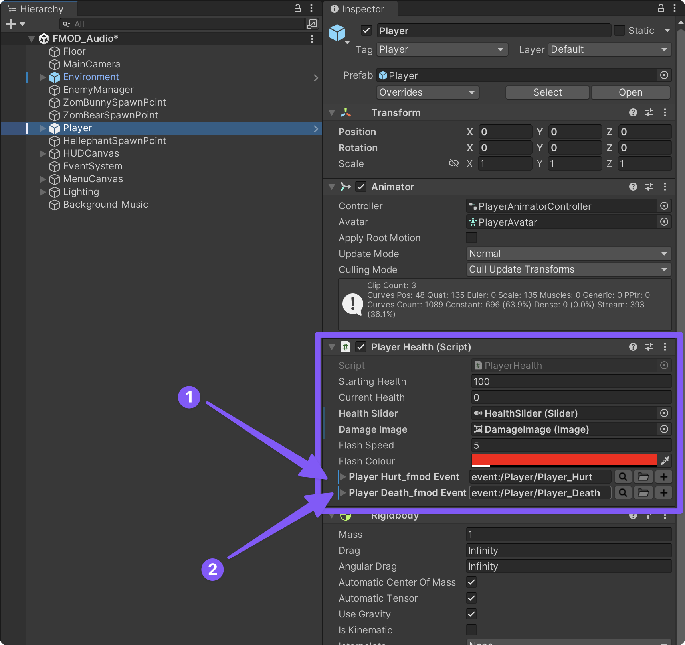
It may be difficult to hear with the background music playing, but you can now test you game and see if you hear the player hurt and death FMOD events getting triggered.
Adding the Gunshot Sounds
We’ll follow a similar process to add the gun shot sounds.
For this, we’ll need to find and edit the “PlayerShooting” script on the the “GunBarrelEnd” game object which is a child of the main “Player” game object.
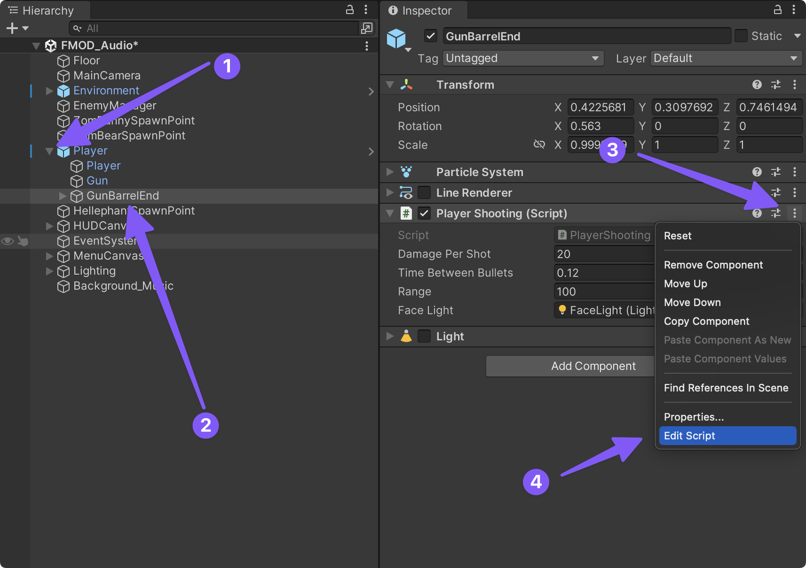
Now repeat the same four step process we did with the previous script.
Tell the script to use the FMODUnity namespace by adding the using FMODUnity; statement at the top of the script.
Add our custom playFmodEvent() function.
Declare any FMOD events that we’ll want to be able to play within our script as public variables.
And finally, call the playFmodEvent() where it is needed with the corresponding FMOD event passed as its argument.
Here is the completed PlayerShooting script. See if you can identify the four edits that were made to this script to integrate the FMOD event.
Completed PlayerShooting script:
using UnityEngine;using UnitySampleAssets.CrossPlatformInput;using FMODUnity; //allows us to talk to FMOD from within this scriptnamespace CompleteProject{ public class PlayerShooting : MonoBehaviour { public int damagePerShot = 20; // The damage inflicted by each bullet. public float timeBetweenBullets = 0.15f; // The time between each shot. public float range = 100f; // The distance the gun can fire. float timer; // A timer to determine when to fire. Ray shootRay = new Ray(); // A ray from the gun end forwards. RaycastHit shootHit; // A raycast hit to get information about what was hit. int shootableMask; // A layer mask so the raycast only hits things on the shootable layer. ParticleSystem gunParticles; // Reference to the particle system. LineRenderer gunLine; // Reference to the line renderer. Light gunLight; // Reference to the light component. public Light faceLight; // Duh float effectsDisplayTime = 0.2f; // The proportion of the timeBetweenBullets that the effects will display for. // declares the FMOD event that we want to be able to play within this script public EventReference gunShot_fmodEvent; void Awake () { // Create a layer mask for the Shootable layer. shootableMask = LayerMask.GetMask ("Shootable"); // Set up the references. gunParticles = GetComponent<ParticleSystem> (); gunLine = GetComponent <LineRenderer> (); gunLight = GetComponent<Light> (); //faceLight = GetComponentInChildren<Light> (); } void Update () { // Add the time since Update was last called to the timer. timer += Time.deltaTime;#if !MOBILE_INPUT // If the Fire1 button is being press and it's time to fire... if(Input.GetButton ("Fire1") && timer >= timeBetweenBullets && Time.timeScale != 0) { // ... shoot the gun. Shoot (); }#else // If there is input on the shoot direction stick and it's time to fire... if ((CrossPlatformInputManager.GetAxisRaw("Mouse X") != 0 || CrossPlatformInputManager.GetAxisRaw("Mouse Y") != 0) && timer >= timeBetweenBullets) { // ... shoot the gun Shoot(); }#endif // If the timer has exceeded the proportion of timeBetweenBullets that the effects should be displayed for... if(timer >= timeBetweenBullets * effectsDisplayTime) { // ... disable the effects. DisableEffects (); } } public void DisableEffects () { // Disable the line renderer and the light. gunLine.enabled = false; faceLight.enabled = false; gunLight.enabled = false; } void Shoot () { // Reset the timer. timer = 0f; // Enable the lights. gunLight.enabled = true; faceLight.enabled = true; // Stop the particles from playing if they were, then start the particles. gunParticles.Stop (); gunParticles.Play (); // Enable the line renderer and set it's first position to be the end of the gun. gunLine.enabled = true; gunLine.SetPosition (0, transform.position); // Set the shootRay so that it starts at the end of the gun and points forward from the barrel. shootRay.origin = transform.position; shootRay.direction = transform.forward; // Perform the raycast against gameobjects on the shootable layer and if it hits something... if(Physics.Raycast (shootRay, out shootHit, range, shootableMask)) { // Try and find an EnemyHealth script on the gameobject hit. EnemyHealth enemyHealth = shootHit.collider.GetComponent <EnemyHealth> (); // If the EnemyHealth component exist... if(enemyHealth != null) { // ... the enemy should take damage. enemyHealth.TakeDamage (damagePerShot, shootHit.point); } // Set the second position of the line renderer to the point the raycast hit. gunLine.SetPosition (1, shootHit.point); } // If the raycast didn't hit anything on the shootable layer... else { // ... set the second position of the line renderer to the fullest extent of the gun's range. gunLine.SetPosition (1, shootRay.origin + shootRay.direction * range); } // Play the FMOD event for when the player shoots PlayFmodEvent(gunShot_fmodEvent); } // our custom function for playing FMOD events. public void PlayFmodEvent(EventReference fmodEvent) { RuntimeManager.PlayOneShot(fmodEvent); } }}
Now all we have to do is save the script, return to unity and select the “Player_Shoots” FMOD event, and test our game.
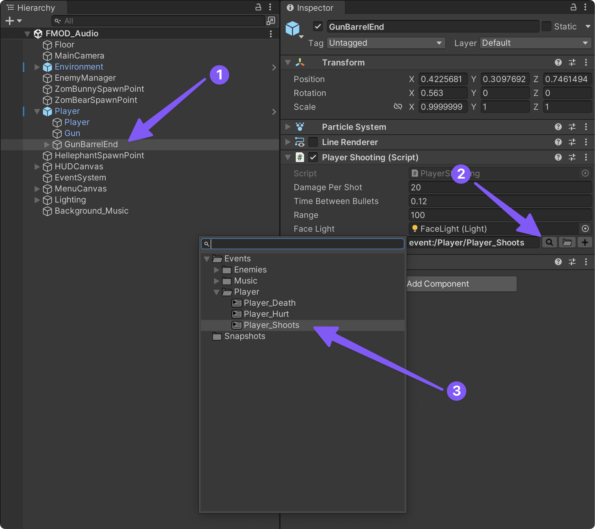
Connecting the Enemy’s FMOD Events
If you look at the scene’s Hierarchy window in Unity, you’ll notice that their are not any game objects for the enemies. That is because scripts on the “EnemyManger” game object are automatically spawning the enemies into the game based upon what are called “Prefabs.” You can think of prefabs as being kinda of like presets for game objects. To make a long story short, this means that we’ll need to edit the prefabs for each of our enemies rather than a specific game object.
You can find the prefabs for our three enemies in the project’s window under _Completed Assets > Prefabs. Since all three enemies use the same Enemy Health script, we can accomplish most of our work by editing just one of the enemy prefabs. So let’s open the Enemy Health script from the Hellephant prefab.
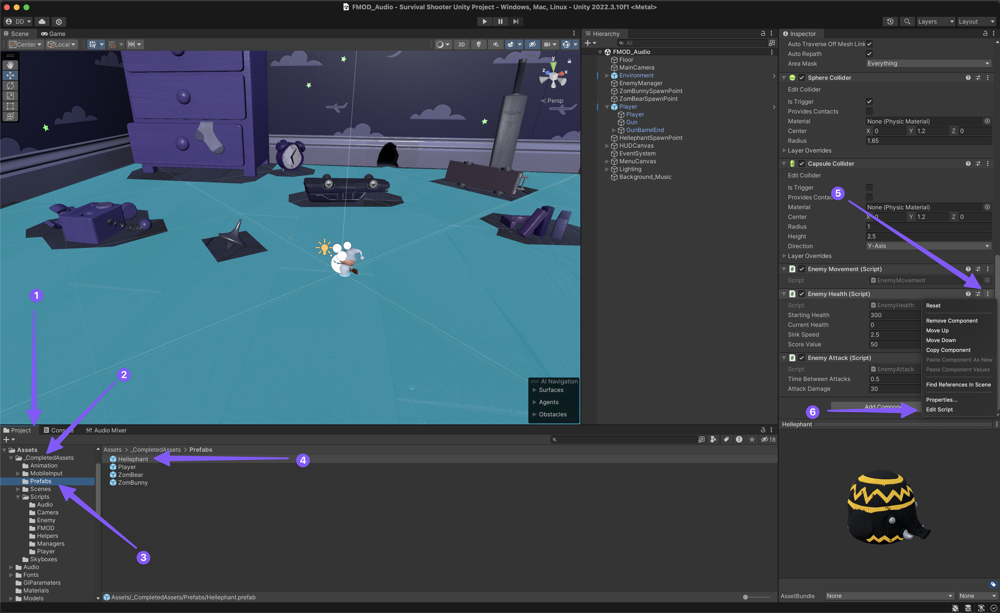
Then we’ll edit this script just like we did the Player Health script.
Here is the complete Enemy Health script:
using UnityEngine;using FMODUnity;namespace CompleteProject{ public class EnemyHealth : MonoBehaviour { public int startingHealth = 100; // The amount of health the enemy starts the game with. public int currentHealth; // The current health the enemy has. public float sinkSpeed = 2.5f; // The speed at which the enemy sinks through the floor when dead. public int scoreValue = 10; // The amount added to the player's score when the enemy dies. Animator anim; // Reference to the animator. ParticleSystem hitParticles; // Reference to the particle system that plays when the enemy is damaged. CapsuleCollider capsuleCollider; // Reference to the capsule collider. bool isDead; // Whether the enemy is dead. bool isSinking; // Whether the enemy has started sinking through the floor. // our two FMOD events for when the enemy gets hurt and dies public EventReference enemyHurt_fmodEvent; public EventReference enemyDeath_fmodEvent; void Awake () { // Setting up the references. anim = GetComponent <Animator> (); hitParticles = GetComponentInChildren <ParticleSystem> (); capsuleCollider = GetComponent <CapsuleCollider> (); // Setting the current health when the enemy first spawns. currentHealth = startingHealth; } void Update () { // If the enemy should be sinking... if(isSinking) { // ... move the enemy down by the sinkSpeed per second. transform.Translate (-Vector3.up * sinkSpeed * Time.deltaTime); } } public void TakeDamage (int amount, Vector3 hitPoint) { // If the enemy is dead... if(isDead) // ... no need to take damage so exit the function. return; // Reduce the current health by the amount of damage sustained. currentHealth -= amount; // Set the position of the particle system to where the hit was sustained. hitParticles.transform.position = hitPoint; // And play the particles. hitParticles.Play(); // play the enemy hurt FMOD event PlayFmodEvent(enemyHurt_fmodEvent); // If the current health is less than or equal to zero... if (currentHealth <= 0) { // ... the enemy is dead. Death (); } } void Death () { // The enemy is dead. isDead = true; // Turn the collider into a trigger so shots can pass through it. capsuleCollider.isTrigger = true; // Tell the animator that the enemy is dead. anim.SetTrigger ("Dead"); // play the enemy death FMOD event PlayFmodEvent(enemyDeath_fmodEvent); } public void StartSinking () { // Find and disable the Nav Mesh Agent. GetComponent <UnityEngine.AI.NavMeshAgent> ().enabled = false; // Find the rigidbody component and make it kinematic (since we use Translate to sink the enemy). GetComponent <Rigidbody> ().isKinematic = true; // The enemy should no sink. isSinking = true; // Increase the score by the enemy's score value. ScoreManager.score += scoreValue; // After 2 seconds destory the enemy. Destroy (gameObject, 2f); } // our custom function for playing FMOD events. public void PlayFmodEvent(EventReference fmodEvent) { RuntimeManager.PlayOneShot(fmodEvent); } }}
Once you’ve completed the edits to the Enemy Health script, jump back into Unity and update each of the three enemy prefabs by selecting their FMOD events in the Inspector window.
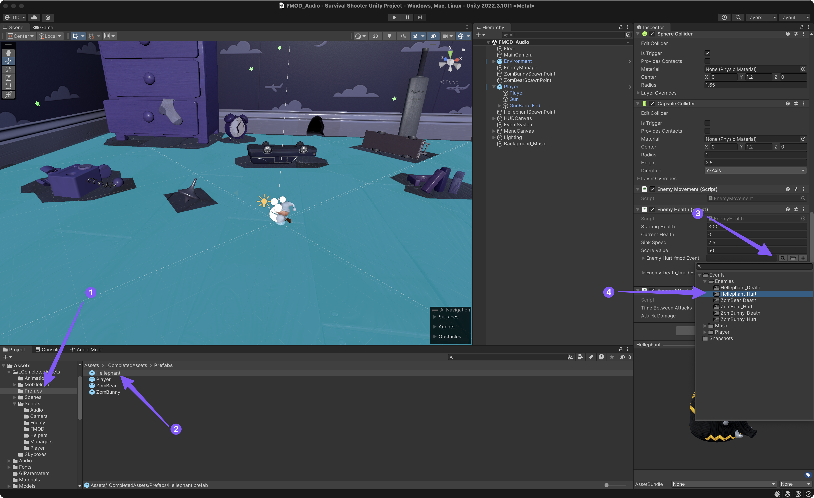
Controlling the Mix
When you are playing the game, you’ll notice that pressing the escape key on your computer keyboard brings up the game’s Pause menu where you can adjust the volume of the Music and SFX separately. To get these sliders working we’ll need to connect the sliders to their corresponding FMOD parameters. But first we need to do some work on our FMOD project before we can get everything connected in Unity with some more custom scripts.
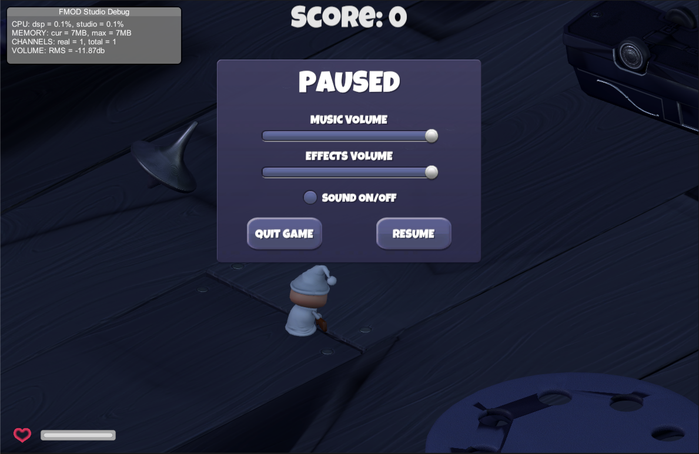
We’ll start by setting up our FMOD Project’s Mixer and then establishing two FMOD parameters that will assign as automation sources to control the volume of the SFX and Music independently.
In FMOD, switch to the Mixer window by either navigating to the Menu Bar > Window > Mixer.
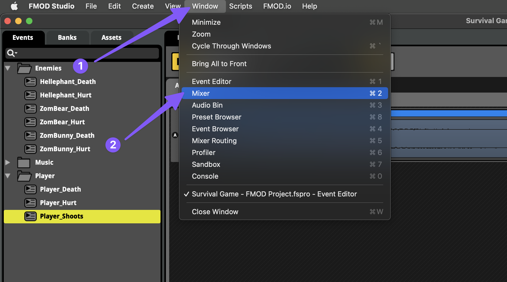
On the left side of the Mixer window, expand the Master Bus, then right-click on it and add two new groups named “Music” and “SFXs”.
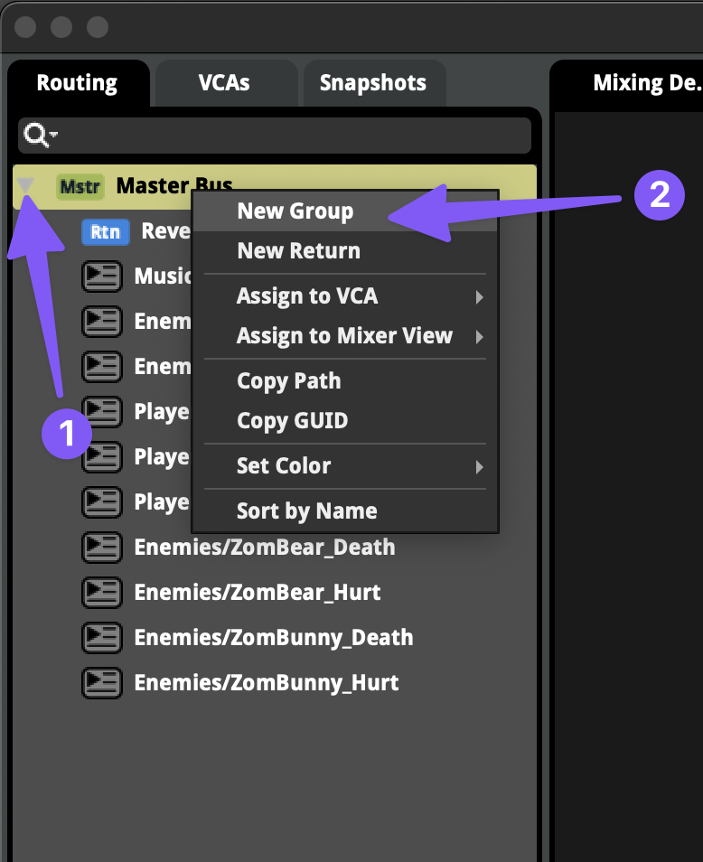
Then route each FMOD event to its corresponding Group track by dragging and dropping them like files into folders.
You can also delete the “Reverb Return” track since we wont be using that within this project.
When your routing is complete, your Mixer window should look like this:
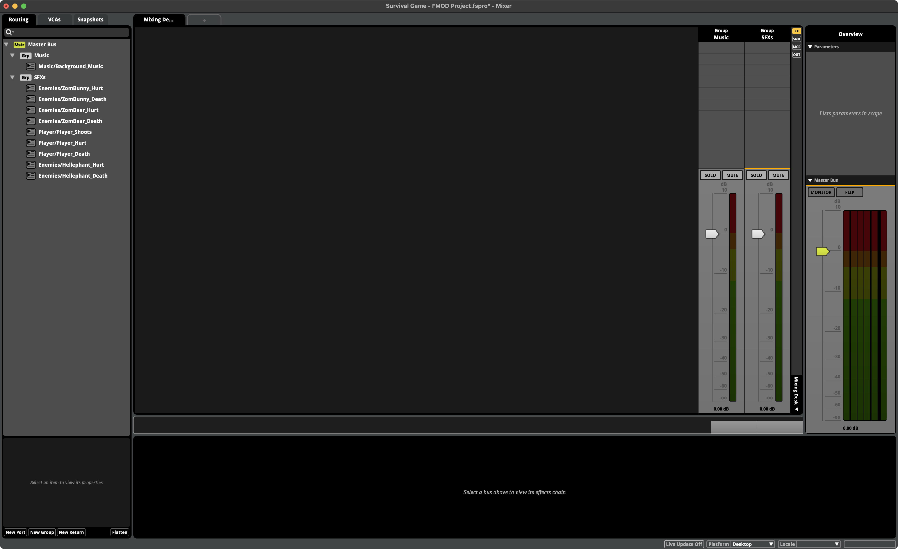
Now we’ll assign new parameters to automate the volume faders of the Music and SFXs group tracks by first right-clicking on the volume fader and selecting “Add Automation”.
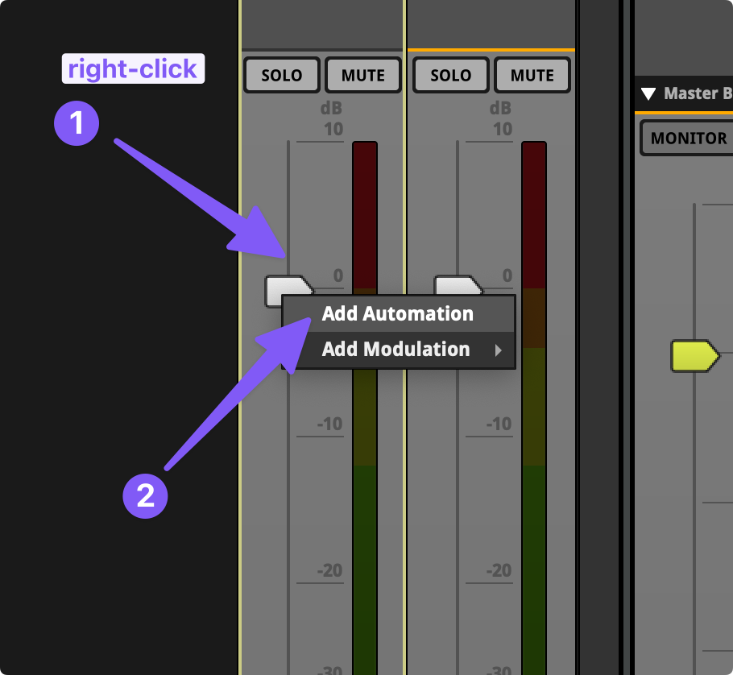
You’ll see that this exposes the automation curves for the volume control in the lower part of the Mixer window.
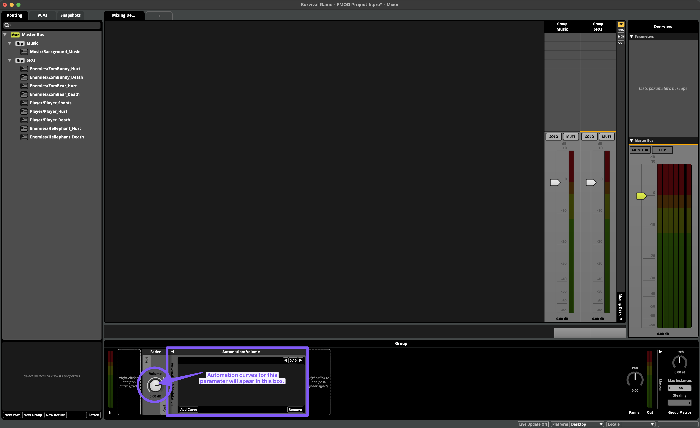
Near the bottom left corner of the automation window that appeared click “Add Curve” followed by clicking “New Parameter”.
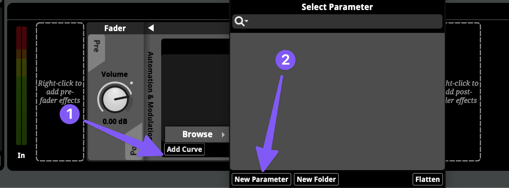
In the Add Parameter window that appears, create a new continuous parameter named “Music_Volume” that has a value range of 0 to 1, an initial value of 1, and has a global scope.
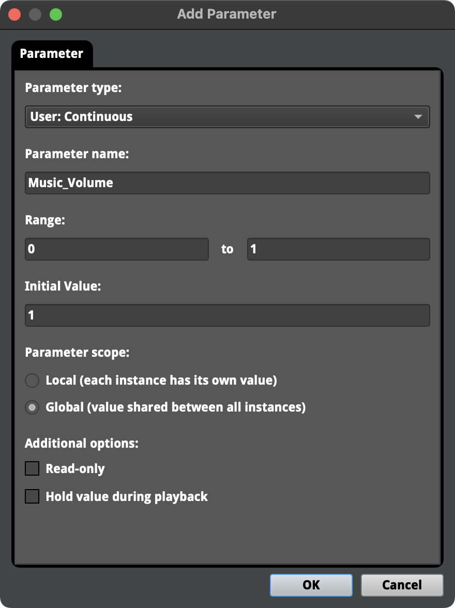
Now, back in the Mixer window we can define the curve for how the new “Music_Volume” parameter automates the volume of the Music Group.
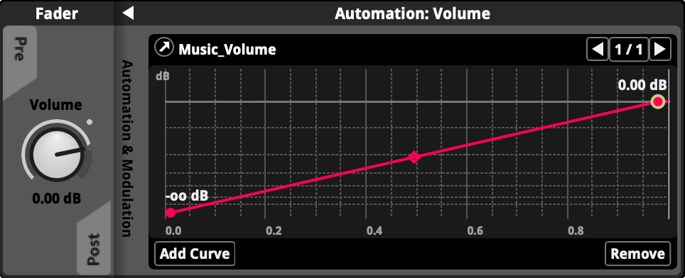
Repeat this same process for the SFXs Group, but call the new parameter “SFXs_Volume”
And again for the Master Bus, and call it’s automating parameter “Main_Volume”
To finish our work in FMOD we’ll first rebuild the FMOD project and then save it before returning to Unity.
Back in Unity add a new script to the PausePanel game object that is a child of the MenuCanvas game object. Name the new script “FMODSliderParameterControl”. Then copy and past this code into your new script:
using UnityEngine;using UnityEngine.UI;using FMODUnity;public class FMODSliderParameterControl : MonoBehaviour{ // A struct to hold the slider and its corresponding FMOD parameter name. [System.Serializable] public struct SliderParameterPair { public Slider soundSlider; public string fmodParameterName; } // Array of SliderParameterPair - each element represents a slider and its corresponding FMOD parameter. public SliderParameterPair[] sliderParameterPairs; void Start() { // For each SliderParameterPair in the array, initialize the FMOD parameter and set up the listener for the slider's onValueChanged event. foreach (var pair in sliderParameterPairs) { // Initialize the FMOD parameter with the initial value of the Slider. RuntimeManager.StudioSystem.setParameterByName(pair.fmodParameterName, pair.soundSlider.value); // Setup the action to be performed whenever the Slider value changes. pair.soundSlider.onValueChanged.AddListener((value) => UpdateFMODParameterValue(value, pair.fmodParameterName)); } } // A function to update the FMOD parameter value. void UpdateFMODParameterValue(float sliderValue, string parameterName) { RuntimeManager.StudioSystem.setParameterByName(parameterName, sliderValue); }}
This script allows us to assign any number of sliders in Unity to control any FMOD parameter by first clicking to expand the Slider Parameter Pairs followed by clicking the + symbol to add the number of sliders that need to be assigned to an FMOD paremeter (in this case two: Music and SFXs).
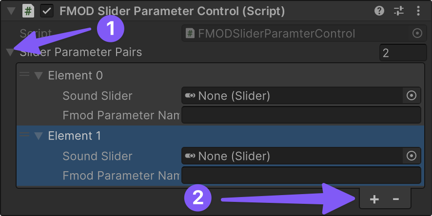
Next, select the MusicSlider for the first slot and the EffectsSlider for the second slot and enter the name of their corresponding FMOD parameters: Music_Volume and SFXs_Volume.
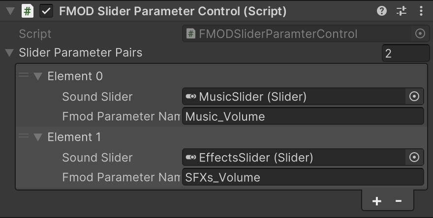
Next, we’ll need to adjust the minimum and maximum value ranges for the Music and SFXs slider in unity by selecting their game objects and setting their Slider component’s minimum value to 0 and maximum value to 1 and their starting value to 1. (Note: You’ll have to set the max value to 1 before you’ll be able to set the minimum value to 0)
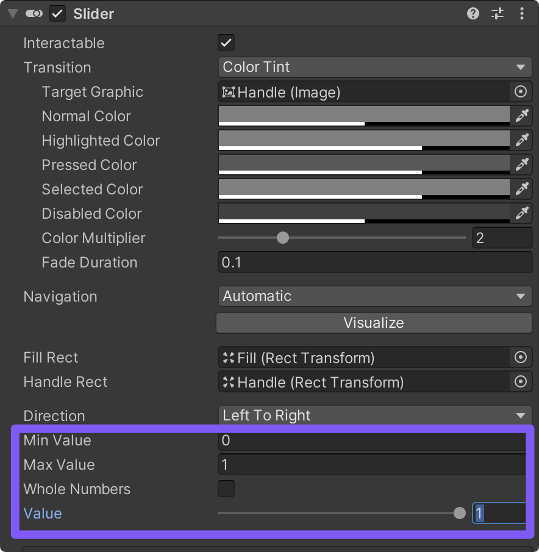
Finally, let’s connect the Sound On/Off toggle button from the pause menu to control the master volume in the FMOD Mixer. Add a new script to the PausePanel game object called “FMODToggleParameterControl”.
Here is the FMODToggleParameterControl script:
using UnityEngine;using UnityEngine.UI;using FMODUnity;public class FMODToggleParameterControl : MonoBehaviour{ [System.Serializable] public struct ToggleParameterPair { public Toggle audioToggle; public string fmodParameterName; } public ToggleParameterPair[] toggleParameterPairs; void Start() { foreach (var pair in toggleParameterPairs) { // Initialize the FMOD parameter with the initial value of the Toggle. RuntimeManager.StudioSystem.setParameterByName(pair.fmodParameterName, pair.audioToggle.isOn ? 1.0f : 0.0f ); // Setup the action to be performed whenever the Toggle value changes. pair.audioToggle.onValueChanged.AddListener((value) => UpdateFMODParameterValue(value, pair.fmodParameterName)); } } // A function to update the FMOD parameter value. void UpdateFMODParameterValue(bool toggleValue, string parameterName) { // Set FMOD parameter to 1 if Toggle is on, and 0 if off. RuntimeManager.StudioSystem.setParameterByName(parameterName, toggleValue ? 1.0f : 0.0f); }}
Then, just like with the sliders, add the Audio Toggle and tell it to control the FMOD Parameter called “Main_Volume”
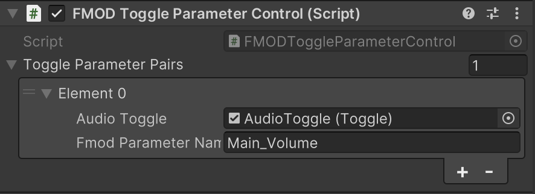
Note
Problems
Enemy SFXs
Now that we can turn down the level of the background music, you might hear some problems with the SFXs. The biggest being that you probably don’t hear the enemies getting hurt or dyeing. Why might this be the case? What sounds do you hear? Is there any difference between how you created the sounds in FMOD that you can hear versus the sounds that you can’t?
Here is a hint!
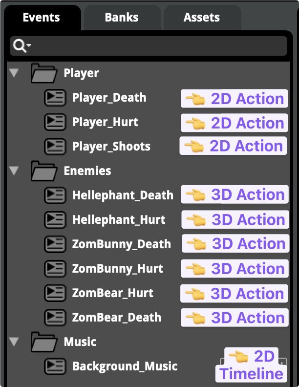
It’s all the 3D Actions that we can’t hear. And it is not because they aren’t being triggered its because they are too far away from our FMOD Listener to be heard. To fix this go into each 3D Action event and experiment with adjusting its minimum and maximum distance until you find something that works well for the game.
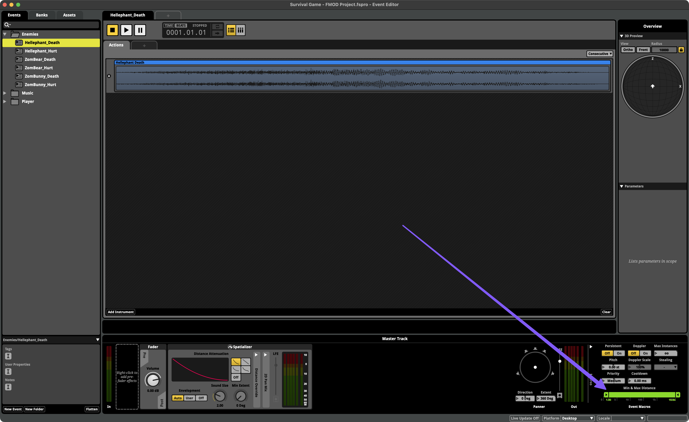
Background Music and the Player’s Death
If you listen to the Player_Death event in FMOD you’ll hear that it includes both the players sad death cry and the musical cue that should accompany it. However, the game’s background music keeps playing even when the player dies, so its hard to hear the death music cue. See if you can figure out how to use FMOD’s Commander instrument in the Player_Death event to stop the Background_Music event whenever the player dies.
Controlling FMOD Events with the Player’s Health and Score
Start by opening the Players_Health script and adding the following line of code in the “TakeDamage” function below the line the updates the Health Status Bar UI element.
// Update FMOD Health ParameterRuntimeManager.StudioSystem.setParameterByName("Health", currentHealth);
Completed Script
using UnityEngine;using UnityEngine.UI;using System.Collections;using UnityEngine.SceneManagement;using FMODUnity;namespace CompleteProject{ public class PlayerHealth : MonoBehaviour { public int startingHealth = 100; // The amount of health the player starts the game with. public int currentHealth; // The current health the player has. public Slider healthSlider; // Reference to the UI's health bar. public Image damageImage; // Reference to an image to flash on the screen on being hurt. public float flashSpeed = 5f; // The speed the damageImage will fade at. public Color flashColour = new Color(1f, 0f, 0f, 0.1f); // The colour the damageImage is set to, to flash. public EventReference playerHurt_fmodEvent; public EventReference playerDeath_fmodEvent; Animator anim; // Reference to the Animator component. PlayerMovement playerMovement; // Reference to the player's movement. PlayerShooting playerShooting; // Reference to the PlayerShooting script. bool isDead; // Whether the player is dead. bool damaged; // True when the player gets damaged. void Awake () { // Setting up the references. anim = GetComponent <Animator> (); playerMovement = GetComponent <PlayerMovement> (); playerShooting = GetComponentInChildren <PlayerShooting> (); // Set the initial health of the player. currentHealth = startingHealth; // Update FMOD Health Parameter RuntimeManager.StudioSystem.setParameterByName("Health", currentHealth); } void Update () { // If the player has just been damaged... if(damaged) { // ... set the colour of the damageImage to the flash colour. damageImage.color = flashColour; } // Otherwise... else { // ... transition the colour back to clear. damageImage.color = Color.Lerp (damageImage.color, Color.clear, flashSpeed * Time.deltaTime); } // Reset the damaged flag. damaged = false; } public void TakeDamage (int amount) { // Set the damaged flag so the screen will flash. damaged = true; // Reduce the current health by the damage amount. currentHealth -= amount; // Set the health bar's value to the current health. healthSlider.value = currentHealth; // Update FMOD Health Parameter RuntimeManager.StudioSystem.setParameterByName("Health", currentHealth); // If the player has lost all it's health and the death flag hasn't been set yet... if (currentHealth <= 0 && !isDead) { // ... it should die. Death (); } // Play the FMOD event for when the player get's hurt PlayFmodEvent(playerHurt_fmodEvent); } void Death () { // Set the death flag so this function won't be called again. isDead = true; // Turn off any remaining shooting effects. playerShooting.DisableEffects (); // Tell the animator that the player is dead. anim.SetTrigger ("Die"); // Turn off the movement and shooting scripts. playerMovement.enabled = false; playerShooting.enabled = false; // Play the FMOD event for when the player dies PlayFmodEvent(playerDeath_fmodEvent); } public void RestartLevel () { // Reload the level that is currently loaded. SceneManager.LoadScene (0); } public void PlayFmodEvent(EventReference fmodEvent) { RuntimeManager.PlayOneShot(fmodEvent); } }}
Add the same line of code as the last step of the “Awake” function so that every time the game starts the FMOD Parameter is reset to full health.
Then find the “Score_Manager” script located within the HUDCanvas>ScoreText game objects and add the following line of code as the last step of the “Update” function. Be sure to also add the using FMODUnity; at the top of the script.
using UnityEngine;using UnityEngine.UI;using System.Collections;using FMODUnity;namespace CompleteProject{ public class ScoreManager : MonoBehaviour { public static int score; // The player's score. Text text; // Reference to the Text component. void Awake () { // Set up the reference. text = GetComponent <Text> (); // Reset the score. score = 0; } void Update () { // Set the displayed text to be the word "Score" followed by the score value. text.text = "Score: " + score; // Update FMOD Score Parameter RuntimeManager.StudioSystem.setParameterByName("Score", score); } }}
Then in FMOD add two global parameters to you Background_Music event.
Health (range = 0 - 100, starting value = 100)
Score (range = 0 - 1000, starting value = 0)
You should now be able to save and build you FMOD project and with those parameters getting updated in real time by Unity.
That is it! We have now connected everything! There is plenty we could do to improve the audio of our game, but you now have experience with the basics of integrating FMOD with Unity.
Challenge
Use the Score and Health parameters to automate how the music and SFXs sound.
Once you’ve got the player’s health automating parameters in FMOD you may notice that things don’t reset when you die and the game starts over. See if you can’t figure out where you need to add the following lines of code to the Player_Health script to make it reset the Health parameter on each reload.
// Update FMOD Health ParameterRuntimeManager.StudioSystem.setParameterByName("Health", currentHealth);
See if you can add some more sounds to the game. For example, custom SFXs for when the player Yawns, or when the player/enemies move.
A little help…
If you need some help triggering FMOD events via animations here is a little help.
Start by reviewing the step of Adding Footstep Sounds from our previous guide to Working with Audio In Unity
Then, back in your Survival Shooter game, add the following script to the game object that has the animation you want to add sound to.
FMODAnimationEventTriggers Script
using System.Linq;using UnityEngine;using FMODUnity;public class FMODAnimationEventTriggers : MonoBehaviour{ [System.Serializable] public struct AnimationEventTriggers { public string eventName; public EventReference fmodEvent; } public AnimationEventTriggers[] animationEventTiggerPairs; public void FMODAnimationEventTrigger(string eventString) { AnimationEventTriggers evt = animationEventTiggerPairs.FirstOrDefault(e => e.eventName == eventString); // If the FMOD event is not null, play the FMOD event if (evt.fmodEvent.IsNull == false) // FMOD event is valid, play it { var instance = RuntimeManager.CreateInstance(evt.fmodEvent); instance.set3DAttributes(FMODUnity.RuntimeUtils.To3DAttributes(gameObject)); instance.start(); instance.release(); } }}
In Unity’s Inspector window, use the plus button near the bottom right of the script to add an entry for each sound the you want to trigger from an animation.
Give each sound a Name and assign and FMOD event. Here is an example:
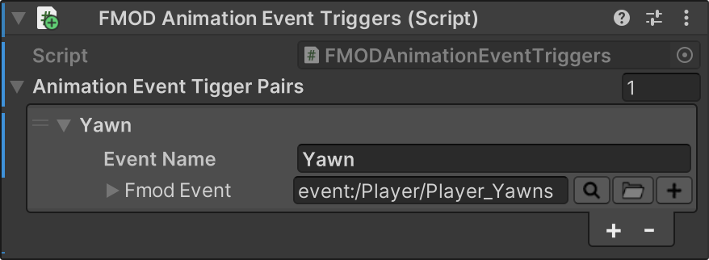
Then find the animation you want to trigger a sound from within Unity’s Project Browser window.
Add an Event to the animation’s timeline and make sure that the “String” for that event matches the Event Name that you added in the FMODAnimationEventTriggers Script. Then click “Apply”
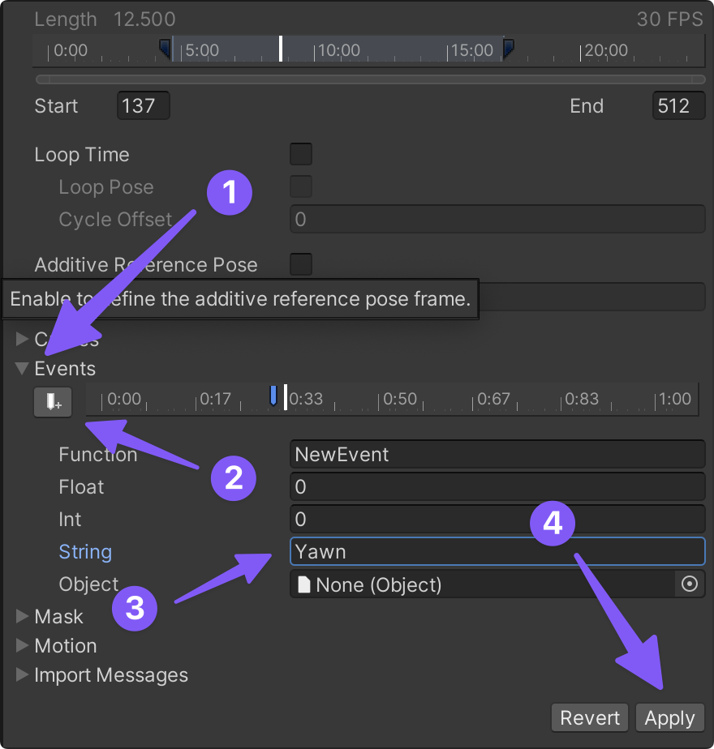
Wanna trigger a sound when you hover over or click on the buttons in the pause menu? Here is a script that let’s add as many buttons as you want to monitor and then assign the FMOD events that you want triggered when that button is either hovered over or clicked.
FMODButtonEventControl Script
using UnityEngine;using UnityEngine.UI;using UnityEngine.EventSystems;using FMODUnity;public class FMODButtonEventControl : MonoBehaviour{ [System.Serializable] public struct Buttons { public Button button; public EventReference FmodHoverEvent; // FMOD Event when the button is hovered over public EventReference FmodClickEvent; // FMOD Event when the button is clicked } public Buttons[] buttonEventPairs; private void Start() { foreach (var pair in buttonEventPairs) { EventTrigger trigger = pair.button.gameObject.AddComponent<EventTrigger>(); // Setup hover event EventTrigger.Entry hoverEntry = new EventTrigger.Entry(); hoverEntry.eventID = EventTriggerType.PointerEnter; hoverEntry.callback.AddListener((data) => { RuntimeManager.PlayOneShot(pair.FmodHoverEvent, pair.button.transform.position); }); trigger.triggers.Add(hoverEntry); // Setup click event EventTrigger.Entry clickEntry = new EventTrigger.Entry(); clickEntry.eventID = EventTriggerType.PointerClick; clickEntry.callback.AddListener((data) => { RuntimeManager.PlayOneShot(pair.FmodClickEvent, pair.button.transform.position); }); trigger.triggers.Add(clickEntry); } }}
How to use
Add this script to the PausePanel game object
Then add two “Button Event Pairs” by clicking the plus button near the bottom left of the script in Unity’s Inspector window.
Add the “QuitButton” and “ResumeButton” in the two Button slots.
Create Button-Hover and Button_Click events in FMOD.
Build and Save your FMOD project
Add the Hover and Click FMOD events in their respective slots within the script in Unity.

Here is what the finished PlayerHealth script should look like now: